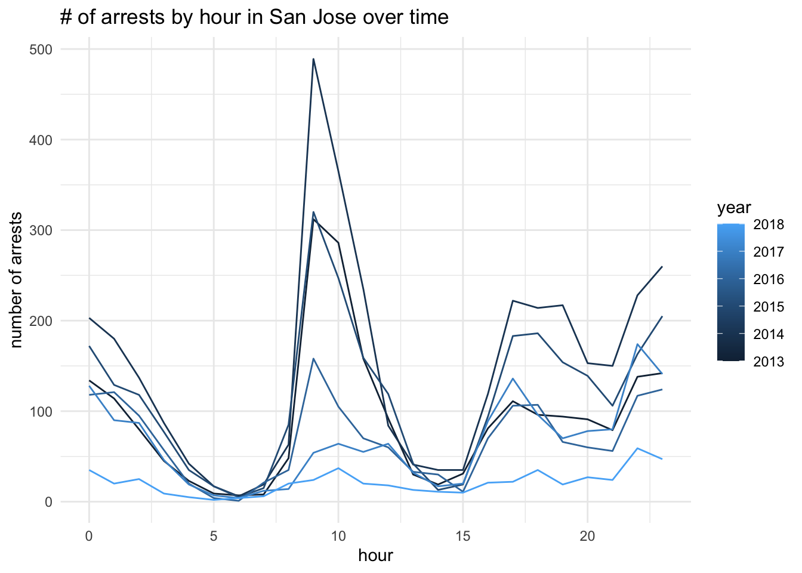

library(ggplot2)
library(sqldf)
library(tidyverse)project5
con_traffic <- DBI::dbConnect(
RMariaDB::MariaDB(),
dbname = "traffic",
host = Sys.getenv("TRAFFIC_HOST"),
user = Sys.getenv("TRAFFIC_USER"),
password = Sys.getenv("TRAFFIC_PWD")
)con_traffic <- DBI::dbConnect(
RMariaDB::MariaDB(),
dbname = "traffic",
host = Sys.getenv("TRAFFIC_HOST"),
user = Sys.getenv("TRAFFIC_USER"),
password = Sys.getenv("TRAFFIC_PWD")
)SHOW TABLES;| Tables_in_traffic |
|---|
| ar_little_rock_2020_04_01 |
| az_gilbert_2020_04_01 |
| az_mesa_2023_01_26 |
| az_statewide_2020_04_01 |
| ca_anaheim_2020_04_01 |
| ca_bakersfield_2020_04_01 |
| ca_long_beach_2020_04_01 |
| ca_los_angeles_2020_04_01 |
| ca_oakland_2020_04_01 |
| ca_san_bernardino_2020_04_01 |
Number of vehicle stops by race in big cities in California - San Francisco, Los Angeles, and San Diego
select count(*) as vehicle_stops,
subject_race as race
from ca_san_francisco_2020_04_01
where type = 'vehicular'
group by subject_race
order by vehicle_stops DESCsf_vehicle_stops vehicle_stops race
1 372318 white
2 157684 asian/pacific islander
3 152196 black
4 116014 hispanic
5 106858 otherselect count(*) as vehicle_stops,
subject_race as race
from ca_los_angeles_2020_04_01
where type = 'vehicular'
group by subject_race
order by vehicle_stops DESCla_vehicle_stops vehicle_stops race
1 1732357 hispanic
2 1030083 white
3 881203 black
4 304175 other
5 187535 asian/pacific islanderselect count(*) as vehicle_stops,
subject_race as race
from ca_san_diego_2020_04_01
where type = 'vehicular'
group by subject_race
order by vehicle_stops DESCsd_vehicle_stops vehicle_stops race
1 162226 white
2 117083 hispanic
3 42705 black
4 32541 asian/pacific islander
5 27238 other
6 1234 <NA>Were more POC drivers stopped by police in the past then now in LA?
select subject_race as race, year(date) as year, count(*) as num_stops
from ca_los_angeles_2020_04_01
where subject_race != 'white' and date IS NOT NULL
group by race, year(date)
order by year ascla_POC_stops_by_year race year num_stops
1 other 2010 28694
2 hispanic 2010 174642
3 black 2010 85514
4 asian/pacific islander 2010 22319
5 hispanic 2011 321677
6 black 2011 181602
7 other 2011 45593
8 asian/pacific islander 2011 32555
9 hispanic 2012 317404
10 black 2012 181566
11 other 2012 45966
12 asian/pacific islander 2012 32114
13 other 2013 46555
14 black 2013 179500
15 hispanic 2013 316371
16 asian/pacific islander 2013 29269
17 hispanic 2014 303600
18 black 2014 159642
19 other 2014 49573
20 asian/pacific islander 2014 26939
21 hispanic 2015 225807
22 black 2015 128514
23 asian/pacific islander 2015 17748
24 other 2015 33286
25 black 2016 136117
26 hispanic 2016 237468
27 other 2016 32344
28 asian/pacific islander 2016 16215
29 black 2017 158470
30 hispanic 2017 265883
31 other 2017 37479
32 asian/pacific islander 2017 19369
33 other 2018 17852
34 black 2018 86959
35 hispanic 2018 138973
36 asian/pacific islander 2018 9033# visualize POC drivers stops by year
la_POC_stops_by_year|>
mutate(num_stops = as.numeric(num_stops)) |>
ggplot(aes(x = year, y = num_stops, color = race)) +
geom_line() +
theme_minimal() +
labs(title = "# of Police Stops of POC drivers in LA by year", y = "number of stops", x = "year") Among all racial groups, Hispanic drivers were most likely to be stopped by police in LA. It seems like there was a sharp increase in stops of POC drivers in 2011, but the numbers gradually decreased over time.
DESCRIBE ca_san_francisco_2020_04_01 | Field | Type | Null | Key | Default | Extra |
|---|---|---|---|---|---|
| raw_row_number | text | YES | NA | ||
| date | date | YES | NA | ||
| time | time | YES | NA | ||
| location | text | YES | NA | ||
| lat | double | YES | NA | ||
| lng | double | YES | NA | ||
| district | text | YES | NA | ||
| subject_age | bigint(20) | YES | NA | ||
| subject_race | text | YES | NA | ||
| subject_sex | text | YES | NA |
DESCRIBE ca_san_jose_2020_04_01 | Field | Type | Null | Key | Default | Extra |
|---|---|---|---|---|---|
| raw_row_number | text | YES | NA | ||
| date | date | YES | NA | ||
| time | time | YES | NA | ||
| location | text | YES | NA | ||
| lat | double | YES | NA | ||
| lng | double | YES | NA | ||
| subject_race | text | YES | NA | ||
| type | text | YES | NA | ||
| arrest_made | double | YES | NA | ||
| citation_issued | double | YES | NA |
What time of the day are people most likely to be arrested in San Jose?
select hour(time) as hour, count(*) as cases
from ca_san_jose_2020_04_01
where outcome = 'arrest'
group by hour(time)
order by cases desc # visualize number of arrests by hour in San Jose
san_jose_arrests_by_time |>
ggplot(aes(x = hour, y = cases)) +
geom_line() +
theme_minimal() +
labs(title = "# of arrests by hour in San Jose", y = "number of arrests", x = "hour") 
What about in San Francisco?
select hour(time) as hour, count(*) as cases
from ca_san_francisco_2020_04_01
where outcome = 'arrest'
group by hour(time)
order by cases desc # visualize number of arrests by hour in San Francisco
sf_arrests_by_time |>
ggplot(aes(x = hour, y = cases)) +
geom_line() +
theme_minimal() +
labs(title = "# of arrests by hour in San Francisco", y = "number of arrests", x = "hour") In San Jose, around 9 AM is the peak time for getting arrested on the road. In San Francisco, around 5pm and midnight is when people get arrested most often.
References
Pierson, Emma, Camelia Simoiu, Jan Overgoor, Sam Corbett-Davies, Daniel Jenson, Amy Shoemaker, Vignesh Ramachandran, et al. 2020. “A Large-Scale Analysis of Racial Disparities in Police Stops Across the United States.” Nature Human Behaviour, 1–10.